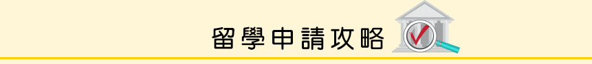

1.時程規劃小叮嚀
- 申請學校前須先列出欲申請的學校名單且注意報名截止日。
- 需準備作品集與推薦信及申請動機等內容。
- 可先在學校提出申請而後在學校指定截止日前補齊成績單，須依學校規定。
2.時間規畫參考表
| 項 目 | 時間安排 | |
|---|---|---|
| 遊學、留學資料蒐集 | 決定以留學或遊學方式、國家、學校種類。 詳看全球學校資訊或選擇代辦。 |
開學前十五至十八個月 |
| 確認國家與學校 | 依自身的需求和預算，規劃課程英文程度考試，學校成績單等等或是以打工遊學方式選擇。 | 開學前十二至十四個月 |
| 線上申請 | 確定學校與住宿方式填寫線上報名註冊與支付學費的方式。 ※需準備申請所需文件 |
開學前十至十二個月 |
| 遊留學資料準備 | 學校寄發接收函、住宿擔保書、繳費通知單與辦理出國手續文件（機票、簽證、體檢） | 開學前六至九個月 |
| 入學準備 | 海外工作或生活及如何作金錢管理，了解語言學校及相關資訊。 行前注意事項、接機安排、出國結匯。 |
開學前三個月 |
| 出發 | 需攜帶入學許可及簽證文件，確定出國際華及需帶的物品。 | 開學前一個月 |
3.各國留學費用參考
| 國 家 | 金 額 |
|---|---|
| 英 國 | GBP8,000-36,000 |
| 澳 洲 | AUD14,000-37,000 |
| 美 國 | USD15,000-50,000 |
| 加拿大 | CAD5,500-26,000 |
| 紐西蘭 | NZD15,000-25,000 |
*以上費用僅供參考，並不包含生活費、住宿費
4.各國學校相關資訊
| 國 家 | 參考網站 |
|---|---|
| 英 國 | Education UK以及UCAS |
| 澳 洲 | Study in Australia |
| 美 國 | Education USA |
| 加拿大 | Study in Canada |
| 紐西蘭 | New Zealand goverment website |